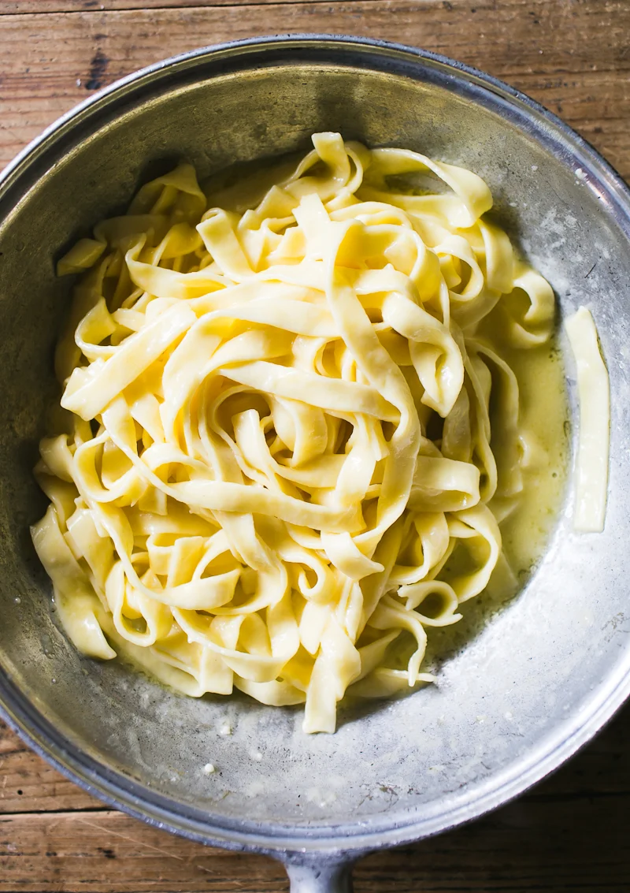

Alfredo

Description
Alfredo is one of my all time favorite Italian dishes when prepared
correctly. Authentic alfredo is a simple, yet delicious, 3 ingredient
sauce that will make you never want to look at jar sauce again. Combine
the sauce with some fresh fettuccine and you have an incredible meal to
look forward to!
For the best results, try to obtain all ingredients listed as high quality
or fresh ingredients. If you cannot find them at your local market, it is
ok to substitue with what is available as the steps will be the same. Are you ready for the ingredient?
Butter, cheese, and salt. That's all to make an authentic and tasty alfredo!
Ingredients
- 8oz fettuccine noodles
- 4 tbsp of butter
- 3oz Parmesan Reggiano (hand shredded from block)
- Salt, to taste
Directions
- Using a grater or food processor, shred or grind your parmesan reggiano until it has a find ground consistency. Set aside.
- Take 4 tbsp of butter and place it in a skillet. Melt over medium low heat, making sure not to burn it.
- Bring 1.5qt of water to a boil. Add your pasta and 1 round tsp of salt. Cook until al dente.
- While pasta is cooking, scoop 1/4 cup of starchy pasta water and add it to your melted butter. Simmer until emulsified and slightly foamy.
- Once the pasta is cooked, do not drain. Remove the pasta with tongs and transfer it to the skillet with the butter.
Increase the heat to medium and toss the pasta in the butter until all noodles are coated. Toss until sauce is thickened (about 30s).
- Add a small handful of cheese and continue tossing the pasta. Once the cheese is absorbed, add 1/4 cup of pasta water and toss until thick again.
Repeat until all cheese is used and no more than 3/4 to 1 cup of pasta water is used.
- Salt to taste and serve!